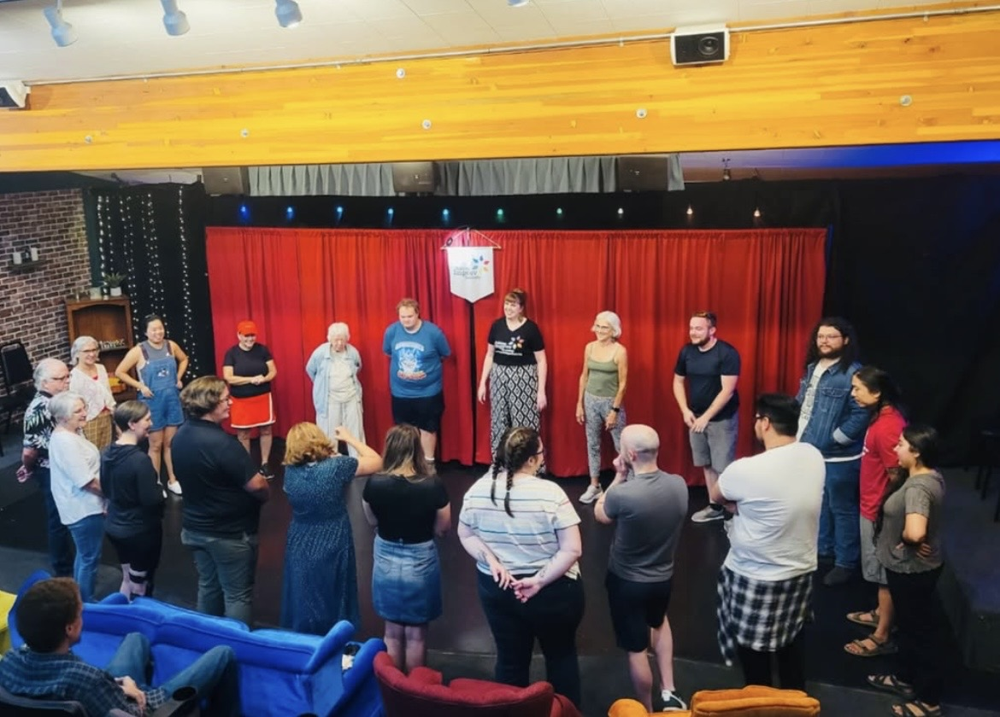
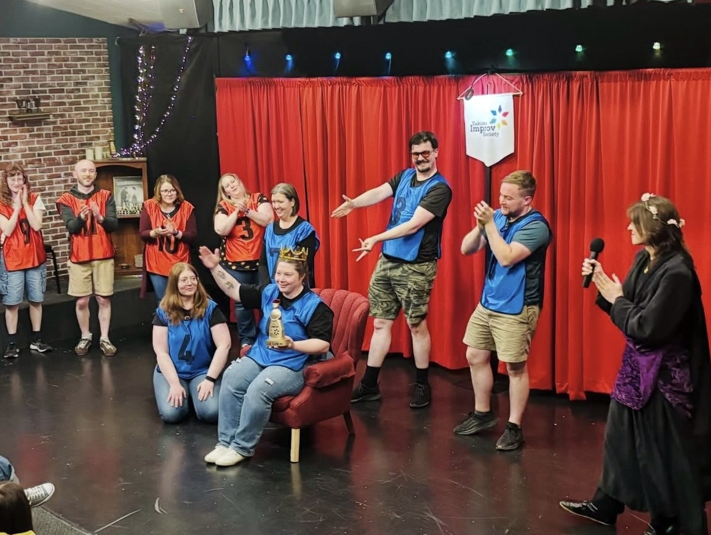
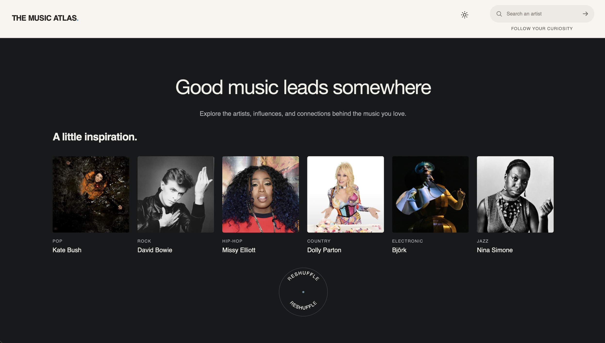

Thomas Simpson
Built with curiosity.
I build thoughtful digital experiences around the details that make something feel clear, useful, and worth exploring.
I like figuring out how things work— and how they could work better.
Good work should feel like someone cared.
I’m drawn to the space between design and development,
where an idea becomes something people can actually use.
The process of experimenting, refining,
and understanding why one solution feels right
is a big part of what makes Frontend Development interesting to me.
I like taking an idea that only exists in my head and figuring out
how to make it real— how it should look, how it should behave, and
what needs to happen underneath for everything to work.
I care about the details because they’re what separates something
that simply works from something that feels considered.
Some details are felt before they’re ever noticed.
Yakima Improv Society
The goal wasn't to simply advertise improv. It was to make improv feel approachable before someone ever walked through the door.
This site had to feel playful without becoming chaotic, welcoming without feeling childish, and organized enough that shows, classes, and private events were easy to understand. That balance shaped the build. Rather than inventing a new visual language, I built from the existing identity. Colors were pulled directly from the logo. Its brush strokes inspired the hand-drawn navigation interactions.
Strong typography, generous spacing, and restrained movement give those playful details room to work without overwhelming the experience.
Live · Unscripted · Together
Improv is for everyone.
A place to laugh, play, and find your people. Where creativity comes to life and community takes center stage.



The Music Atlas
Music has a way of leading somewhere unexpected. One artist introduces another, familiar sounds reveal new influences, and a single discovery can open the door to an entirely different world of music.
The Music Atlas brings that sense of discovery into an interactive experience. Music APIs help uncover connections between artists and genres, while simple, thoughtful interactions make it easy to explore without losing the joy of getting lost in something new.
Editorial typography, a restrained color palette, and subtle transitions create a quiet space for discovery. Built with HTML, CSS, and JavaScript, the design lets the music take center stage and curiosity lead the way.

Nostalgia Bank
A digital archive exploring the sights, sounds, and culture of the internet across time.
Concept + Web Design + Frontend
In DevelopmentAn archive of the internet's eras.